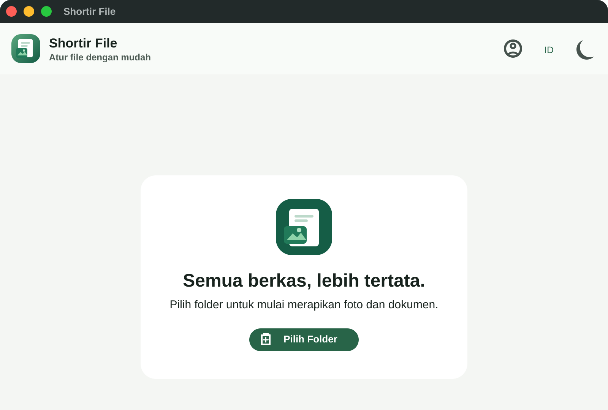

Pilih folder
Tentukan folder yang mau dirapikan—Downloads, Desktop, atau mana pun.
Shortir File menyortir foto dan dokumen ke folder yang rapi—langsung di perangkat, tanpa ribet dan tanpa upload ke cloud.

Shortir File dibuat untuk momen ketika folder Downloads sudah terlalu ramai dan kamu hanya ingin kembali punya kendali.
Tentukan folder yang mau dirapikan—Downloads, Desktop, atau mana pun.
Filter foto atau dokumen, lalu beri nama folder tujuannya.
File berpindah dengan rapi. Kamu tinggal menikmati ruang yang lega.
Pilih folder, filter foto atau dokumen, beri nama folder tujuan—Shortir mengurus sisanya.
Cari file dengan cepat, lihat ukuran dan tipe, lalu pindahkan tanpa membuka sepuluh aplikasi.
File diproses langsung di perangkatmu. Tidak ada galeri yang diam-diam diunggah ke cloud.
Shortir File bekerja dekat dengan file-mu. Kamu tahu apa yang dipilih, ke mana dipindah, dan kapan selesai.
Mulai merapikan ↗Semua file tetap diproses lokal. Pilih paket yang paling cocok untuk ritme kerjamu.
Pilih kebebasan tanpa komitmen panjang.
Satu pembayaran, lebih tenang sepanjang tahun.
Harga dapat berubah mengikuti paket dan periode yang tersedia.
Tempel URL folder Google Drive publik dan lihat fotomu tampil dalam galeri rapi.
Buka galeri ↗Pilih paket yang paling pas untukmu.